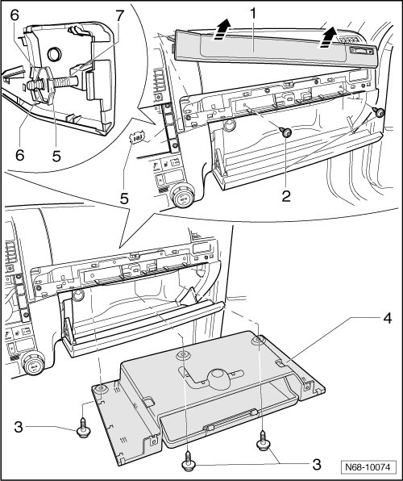

Vehicle Wallet Compartment
Vehicle Wallet Compartment
Removing
- Remove right side instrument panel cover --> [ Instrument Panel Side Covers ] Instrument Panel Side Covers.
- On vehicles without navigation or radio, remove the radio block-off cover --> [ Instrument Panel ] Instrument Panel.
- Remove the radio and/or display and control panel for navigation --> Communication 91 Removal and Installation.
There are two existing variations of the trim - 1 -:
• Trim with threaded pin - 7 - and lock washer - 5 -.
• Trim without threaded pin and lock washer.
• For a better overview, the lock washer - 5 - is shown partially removed in the illustration. When installed, the lock washer is accessible through the radio opening, but not visible.
- Reach through the radio opening and determine by touch if the trim possesses a threaded pin - 7 - and a lock washer - 5 -.
Trim with threaded pin and lock washer
- Reaching through the radio opening, use a small screwdriver to pry the wings - 6 - of the lock washer - 5 - up and pull off the lock washer - 5 - from the threaded pin - 7 -.
• Make sure that the lock washer does not fall into the cockpit.
• The lock washer - 5 - is destroyed during removal. It must be replaced for assembly.
• If the vehicle was equipped with trim without a threaded pin and lock washer and the trim is exchanged for replacement trim with a threaded pin and lock washer, the securing clip in the area of the threaded pin must be removed before assembly.
• Check if the middle of the trim is equipped with a securing clip in the area of the threaded pin. If not, a securing clip must be supplemented at this position.
• After installing the trim - 1 - push on the new lock washer - 5 - in the illustrated position until it is pressed against the surface (do not turn).
Both variations
- Pull trim - 1 - out of mountings in instrument panel.
- Remove the two bolts - 2 -.
- Remove the three bolts - 3 -.
- Pull vehicle wallet compartment - 4 - out of glove compartment.

Installing
- Perform the steps used for removal in reverse order.